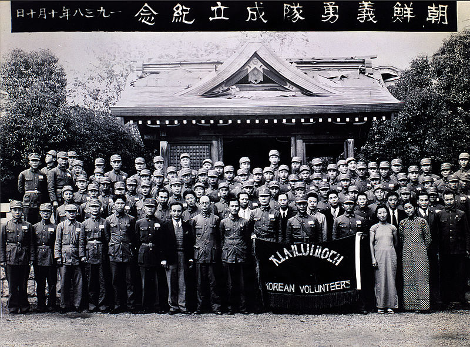

The Korean Independence Movement was a military and diplomatic campaign. It isn't necessarily a single event. It is more like a span of time where multiple events happened. Its purpose was to gain the independence of Korea from Japan.
The end of the short-lived Korean Empire in 1910 started the Japanese Rule. The Japanese Rule gave rise to many Koren resistance movements. The domestic resistance of Korea peaked in the March 1st Movement. The March 1st Movement was chrushed.
The Japanese Rule ended at the end of World War II. The date of the surrender of Japan is now a annual holiday. In South korea, it is called Gwangbokjeol ("Restoration of Light Day"). In North Korea, it is called Chogukhaebangŭi nal ("Fatherland Liberation Day").

The Aftermath
Information
Timeline
The Korean Independence Movement all started back in 1876. The conflicts between Japan and Korea were the underlying source of the Korean Independence Movement. The Japanese Rule gave rise to many Korea resistance movements. The Japanese rule and Korea under Japanese rule were outcomes of a process that began with the Japan–Korea Treaty of 1876.
The Japan-Korea Treaty of 1876 was to integrate Korea politically and economically into the Empire of Japan. The last independent Korean monarchy was the Joseon dynasty. The Joseon dynasty lasted for over 500 years (1392-1910), first as the Joseon Kingdom and later as the Empire of Korea. The Empire of Korea was very short-lived. Korea under Japanese rule began with the end of the korean empire in 1910.
Under Japanese Rule
Seal of the Government-General of Korea Korea (dark red) within the Empire of Japan (light red) at its furthest extent
The Movement Begins
The Koreans were concerned with being dominated by external forces and Korea's state as a colony. The Koreans wanted to retore Korea's independent political authority after Japan invaded the weakened and partially modernized Korean Empire.
After the Japanese annexation of Korea, domestic resistance of Korea peaked in March 1st Movement. The March 1st Movement is also known as the Samil Independence Movement. The March 1st Movement was crushed and sent Korean leaders to flee into China. While in China, korean independence activists made ties with the National Government of the Republic of China. The empire of Japan invaded and occupied northeast China. The nationalist government of China avoided declaring war against Japan. China declared war on Japan when the empire directly attacked Beijing in 1937. This sparked the Second Sino-Japanese War.
After the US declared war on Japan in 1941, China became an ally of World War II. Japanese rule ended at the end of World War II (1945) when U.S. and Soviet forces captured the peninsula.
Geographic Location
Korea is a region in East Asia. Korea is bordered by China to the northwest, Russia to the northeast, and neighbours Japan to the east by the Korea Strait and the Sea of Japan (East Sea).
Notes:
military and diplomatic campaign[1]
get the independence of Korea from Japan[1]
after the Japanese annexation of Korea[1]
the Japanese anexation of Korea happened in 1910[1]
domestic resistance of Korea peaked in March 1st Movement[1]
the Japanese rule gave rise to many Korean resistance movements[1]
Japanese Rule notes:
outcome of a process that began with the Japan–Korea Treaty of 1876[6]
Japan–Korea Treaty of 1876 integrate Korea politically and economically into the Empire of Japan[6]
Korea under Japanese rule began with the end of the korean empire in 1910[6]
the korean empire was very short-lived[6]
the last independent Korean monarchy was the Joseon dynasty[1]
the Joseon dynasty lasted for over 500 years (1392-1910)[1]
it was both the Joseon Kingdom and later it was the Empire of Korea[1]
ended at the end of World War II[6]
ended when U.S. and Soviet forces captured the peninsula[6]
World War II ended in 1945[6]
March 1st Movement notes:
aka Samil Independence Movement[4]
crushed[1]
korean leaders had to flee into China[1]
while in China, korean independence activists made ties with the National Government of the Republic of China.[1]
the rise of the Western imperialism boosted by the Industrial Revolution and other major trends made Korea vulnerable to foreign maneuvering and encroachment[1]
the empire of Japan invaded and occupied northeast China[1]
the nationalist government of China avoided declaring war against Japan[1]
China declared war on Japan when the empire directly attacked Beijing[1]
the empire attacked Beijing in 1937[1]
sparked the Second Sino-Japanese War[1]
after the US declared war on Japan, China became an ally of World War II[1]
the US declared war on Japan in 1941[1]
the date of the surrender of Japan is an annual holiday[1]
in South Korea it is called Gwangbokjeol ("Restoration of Light Day")[1]
in North Korea it is called Chogukhaebangŭi nal ("Fatherland Liberation Day")[1]
Philip Jaisohn is the first Korean to receive American citizenship.[2]
March 1, 1919, group of korean intellectuals in Seoul introduce the Korean Declaration of Independence.[2]
Korean Declaration of Independence inspired by President Woodrow Wilson’s Fourteen Points.[2]
News of the Korean Declaration of Independence was getting to newspapers in America.[2]
 within the Empire of Japan (light red) at its furthest extent")